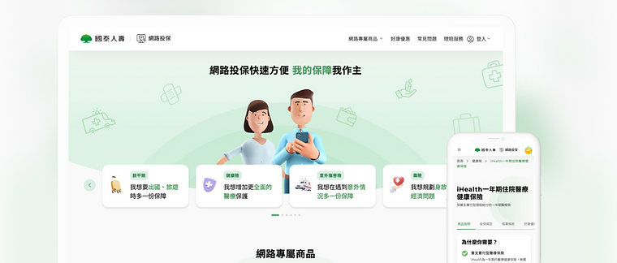
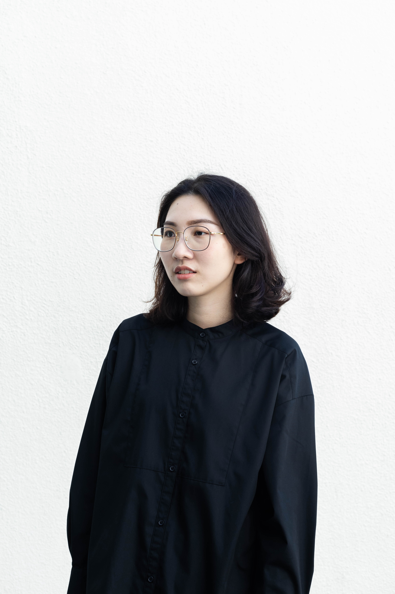

I'm a product builder based in Taiwan.
Ina Chen is a builder who turns ideas into products
that actually matter.
Selected projects.
About me.
I believe I will bring a different perspective on product development with an industrial design and photography background.
Ina Chen is a designer with a passion for building smooth experiences. I love to follow design issues and technology trends, which help me advance workflows and bring new ideas for the product.
My industrial design and photography projects →